Overview
In this tutorial, you will be adding the "crouching" functionality to the player character that was built in the first part of this series (Creating a Player using C++). 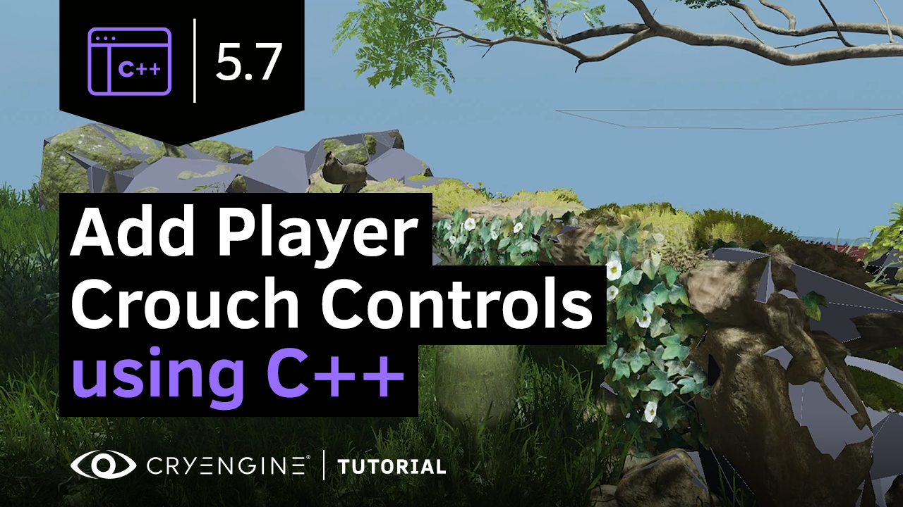
You will be building upon the Player.cpp and Player.h files built in the Creating a Player using C++ tutorial.
Prerequisites
CRYENGINE 5.7 LTS
Visual Studio (2017, 2019 or 2020 work just fine) or any other IDE or code editor of your choice
Refining the Code
As C++ projects get larger, adding more functions, events and general code, you’ll find that the code can quickly become unorganized. Therefore, it’s common practice to periodically refine your code before adding new functions. Your Player.h and Player.cpp, while not incredibly long, could use some refinement and renaming in areas to make better sense of what we currently have. This will make it easier to locate bugs and communicate about your code with others.
Refining Player.h
Open Game.sln, which can be found within the solution folder of your project's main directory, in Visual Studio (or your editor of choice).
If you have not generated a solution yet, or are unsure about the location of the Game.sln file, follow the first steps of the Creating a Player using C++ tutorial.
- Open Player.h and Player.cpp.
- Move the
enum class EPlayerStatefrom its current position to thePublicclass withinCPlayerComponent.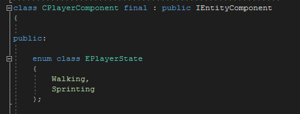
EPlayerState Position Delete the
m_movementSpeedandm_cameraDefaultPosmember variables from theprivateclass in Player.h,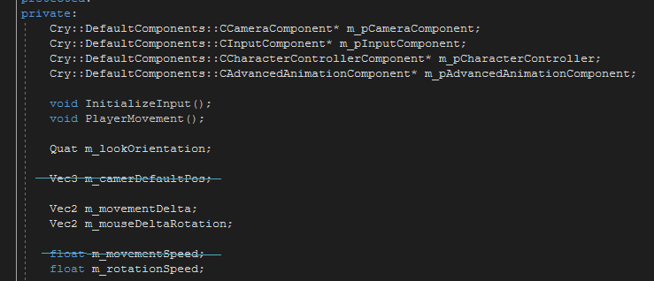
along with the correspondingAddMemberlines: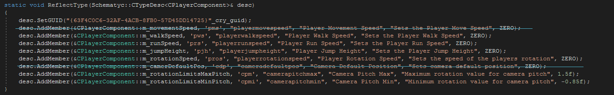
m_movementSpeedwas replaced with walk and run speed in the sprinting tutorial.Within the
privateclass, add a newVec3member variable,m_cameraOffsetStanding.Vec3 m_CameraOffsetStanding;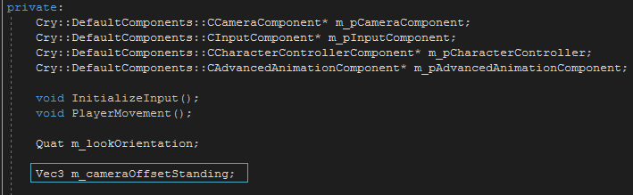
cameraOffsetStanding variableAdd the corresponding
AddMemberline form_cameraOffsetStanding:desc.AddMember(&CPlayerComponent::m_cameraOffsetStanding, 'cams', "cameraoffsetstanding", "Camera Standing Offset", "Offset of the camera while standing", Vec3(0.f, 0.f, DEFAULT_CAMERA_HEIGHT_STANDING);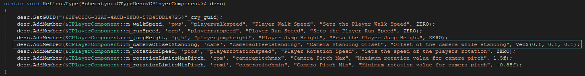
cameraOffsetStanding AddMember linesPreviously, the values had to be modified every time you placed a player into your level. However, you can define the variables in advance within the code while still allowing values to be modified within CRYENGINE 5.7 LTS. To achieve this, you must define constant values for each member.- Create a new
privateclass at the bottom of Player.h. Within this
privateclass, add the following values:static constexpr float DEFAULT_SPEED_WALKING = 3; static constexpr float DEFAULT_SPEED_RUNNING = 6; static constexpr float DEFAULT_JUMP_ENERGY = 3; static constexpr float DEFAULT_CAMERA_HEIGHT_CROUCHING = 2.2; static constexpr float DEFAULT_CAMERA_HEIGHT_STANDING = 3.0; static constexpr float DEFAULT_ROTATION_SPEED = 0.002; static constexpr float DEFAULT_ROT_LIMIT_PITCH_MIN = -0.9; static constexpr float DEFAULT_ROT_LIMIT_PITCH_MAX = 1.15; static constexpr EPlayerState DEFAULT_STATE = EPlayerState::Walking;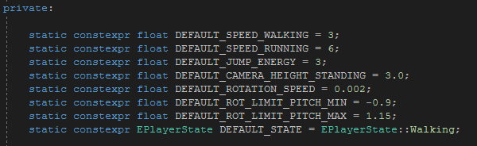
New private class with valuesThis has defined the values for Schematyc, but now you must update the
AddMembervalues to use these constant values. This is done by changing the end value of eachAddMemberline to the one defined above in the newprivateclass. For example, changedesc.AddMember(&CPlayerComponent::m_walkSpeed, 'pws', "playerwalkspeed", "Player Walk Speed", "Sets the Player Walk Speed", ZERO);to
desc.AddMember(&CPlayerComponent::m_walkSpeed, 'pws', "playerwalkspeed", "Player Walk Speed", "Sets the Player Walk Speed", DEFAULT_SPEED_WALKING);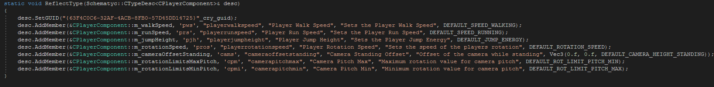
Modified AddMember linesTo finalize the process of setting up default variables within the header, replace the lines
CPlayerComponent() = default; virtual ~CPlayerComponent() = default;with the lines
CPlayerComponent(); virtual ~CPlayerComponent() override {};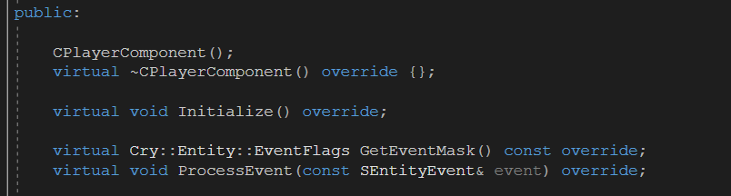
The updated public classAdd clarity between the run-time variables and the component properties in the first
privateclass by adding comments defining them.Any line can be turned into a comment (i.e., completely disregarded when the code is run) by adding
//to the front of the line.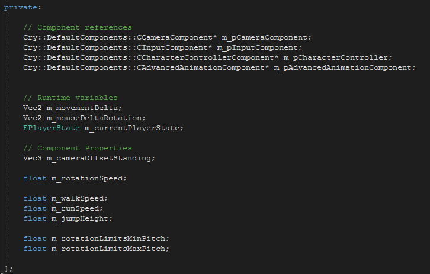
Example commentsAdd the following new runtime variables to the current ones.
Quat m_currentYaw; float m_currentPitch;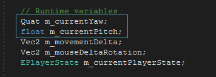
New Runtime VariablesSince these runtime variables will be used to refine the camera in Player.cpp, you do not need an
AddMemberline or definitions for these with variables.Move the following functions into the
protectedclass.void Reset(); void InitializeInput();Under those functions, still within the
protectedclass, add the following functions that will later be used to clarify code function in Player.cpp.void RecenterCollider(); void UpdateMovement(); void UpdateRotation(); void UpdateCamera();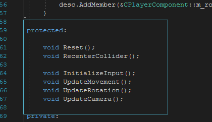
Protected Class- The updated Player.h should look like this:
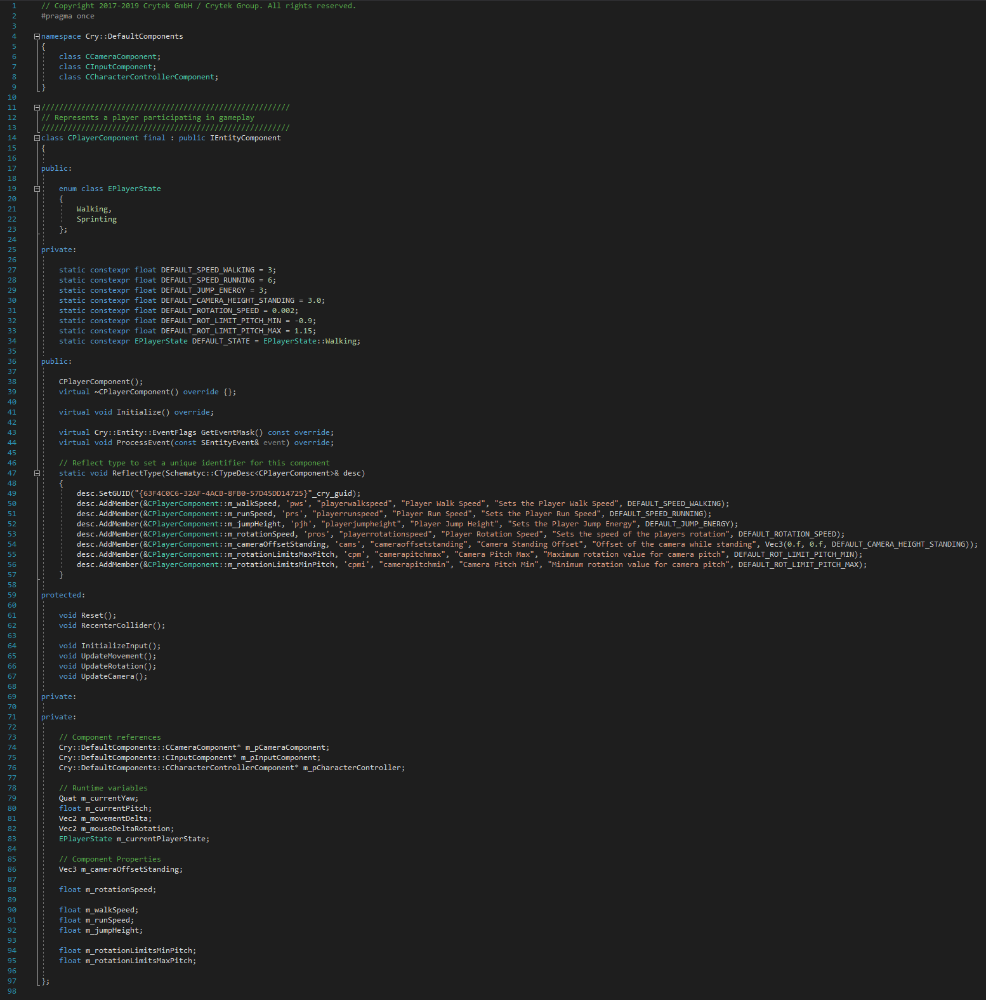
The refined Player.h file
Depending on your character and how you want to implement it, you can also remove any mention of the Animation Component. For a simple first-person capsule player, this component is not needed, but later in the process you may want to implement a model with advanced animations. This can always be added in again later but if you prefer a more refined and less bloated code, its removal will cause no issues.
Refining Player.cpp
With the header cleaned up, you can move on to refining Player.cpp by clearly defining your logic by name and implementing some of the new variables added to Player.h.
Under
namespace, create a definition and name forCPlayerComponent.CPlayerComponent::CPlayerComponent()Beneath that, add the variables declared in Player.h, followed by a function body (defined by a pair of curly brackets):
: m_pCameraComponent(nullptr) , m_pInputComponent(nullptr) , m_pCharacterController(nullptr) , m_currentYaw(IDENTITY) , m_currentPitch(0.f) , m_movementDelta(ZERO) , m_mouseDeltaRotation(ZERO) , m_currentPlayerState(DEFAULT_STATE) , m_cameraOffsetStanding(Vec3(0.f, 0.f, DEFAULT_CAMERA_HEIGHT_STANDING)) , m_rotationSpeed(DEFAULT_ROTATION_SPEED) , m_walkSpeed(DEFAULT_SPEED_WALKING) , m_runSpeed(DEFAULT_SPEED_RUNNING) , m_jumpHeight(DEFAULT_JUMP_ENERGY) , m_rotationLimitsMinPitch(DEFAULT_ROT_LIMIT_PITCH_MIN) , m_rotationLimitsMaxPitch(DEFAULT_ROT_LIMIT_PITCH_MAX) { }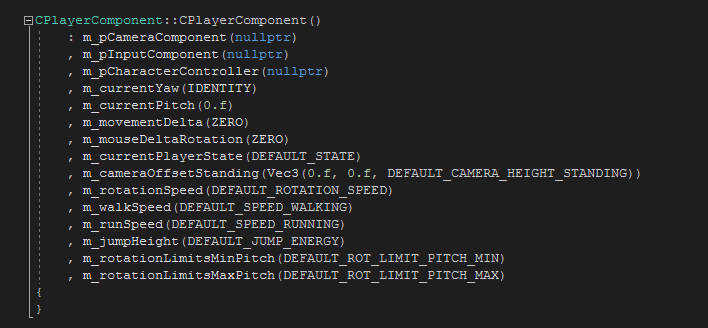
CPlayerComponent DefinitionBy modifying your
Resetfrom being anEvent(as it currently is) to a Function, you can call it within other section of the code.To do this, add the following after the
CPlayerComponent::Initializefunction:void CPlayerComponent::Reset() { }
Copy the movement variables from
EEvent::Resetand paste them into the body ofCPlayerComponent::Reset.m_movementDelta = ZERO; m_mouseDeltaRotation = ZERO;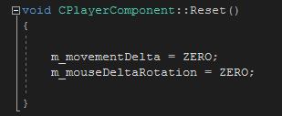
Reset FunctionAdd the following variables to
CPlayerComponent::Reset.InitializeInput(); m_currentPlayerState = EPlayerState::Walking; m_currentYaw = Quat::CreateRotationZ(m_pEntity->GetWorldRotation().GetRotZ()); m_currentPitch = 0.f;- Add comments to further clarify the purpose of these components of
CPlayerComponent::Reset.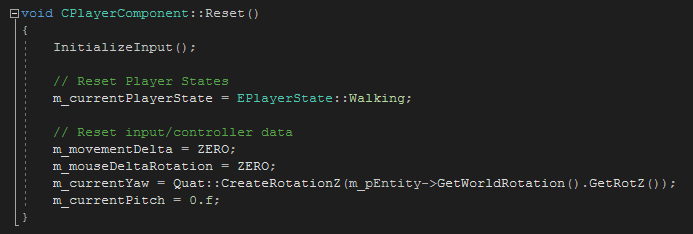
Reset Function with Comments - Delete
case Cry::Entity::EEvent::Resetand all its contents. You can utilize the new
Resetby adding a line to call it withinCPlayerComponent::Initialize():Reset();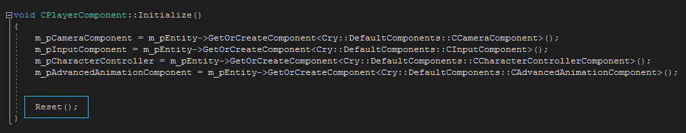
Reset Called in InitializeCurrently, your code uses a cylinder as the shape of the player's physics collider. Implementing a capsule-shaped collider provides new benefits such as gliding up stairs and not become snagged on small physics proxies.
To implement the cylinder shape, add a new definition namedRecenterColliderafter theResetdefinition.void CPlayerComponent::RecenterCollider() { }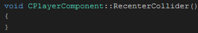
Empty RecenterColliderWithin
RecenterCollideradd the followingif statement.static bool skip = false; if (skip) { skip = false; return; } auto pCharacterController = m_pEntity->GetComponent<Cry::DefaultComponents::CCharacterControllerComponent>(); if (pCharacterController == nullptr) { return; } const auto& physParams = m_pCharacterController->GetPhysicsParameters(); float heightOffset = physParams.m_height * 0.5f; if (physParams.m_bCapsule) { heightOffset = heightOffset * 0.5f + physParams.m_radius * 0.5f; }Unlike a cylinder, the capsule is a cylinder plus a sphere, cut in half and placed on the top and bottom of the cylinder. This is why the calculation uses half height and radius.
Beneath the
if statements, add the following:m_pCharacterController->SetTransformMatrix(Matrix34(IDENTITY, Vec3(0.f, 0.f, 0.005f + heightOffset))); skip = true; m_pCharacterController->Physicalize();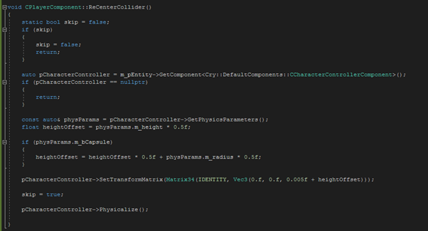
RecenterCollider FunctionNext, move to the
GetEventMasksection of Player.cpp. Add the following events:Cry::Entity::EEvent::EditorPropertyChanged | Cry::Entity::EEvent::PhysicalTypeChanged;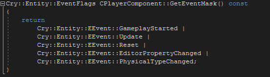
GetEventMask EventsYou can place Event lines on their own line to better visualize the list. Each event must be followed by | apart from the last of the list
Within
EEvent::GameplayStarted, replaceInitializeInput();withReset();case Cry::Entity::EEvent::GameplayStarted: { Reset(); } break;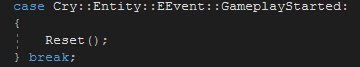
Reset in GameplayStartedWithin
EEvent::Update, replace the existing logic with the functions you added to Player.h:case Cry::Entity::EEvent::Update: { UpdateMovement(); UpdateRotation(); UpdateCamera(); } break;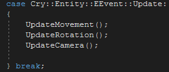
Updated EEvent::UpdateAdd the following events after
EEvent:Update:case Cry::Entity::EEvent::PhysicalTypeChanged: { RecenterCollider(); } break; case Cry::Entity::EEvent::EditorPropertyChanged: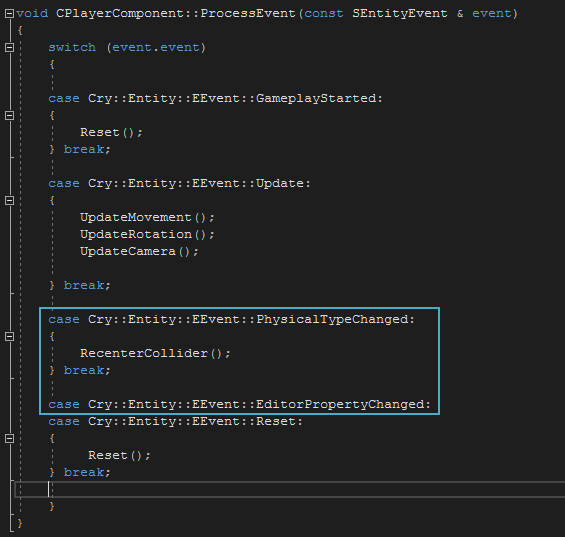
Entire ProcessEventRename
CPlayerComponent::PlayerMovementasCPlayerComponent::UpdateMovementvoid CPlayerComponent::UpdateMovement() { Vec3 velocity = Vec3(m_movementDelta.x, m_movementDelta.y, 0.0f); velocity.Normalize(); float playerMoveSpeed = m_currentPlayerState == EPlayerState::Sprinting ? m_runSpeed : m_walkSpeed; m_pCharacterController->SetVelocity(m_pEntity->GetWorldRotation() * velocity * playerMoveSpeed); }Redefine the
float playerMoveSpeedas aconst float.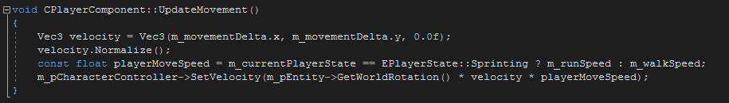
Completed CPlayerComponent UpdateMovementCreate a definition for
UpdateRotation();by using by adding the following belowCPlayerComponent::UpdateMovement:void CPlayerComponent::UpdateRotation() { }This process can also be done by right-clicking on the
void UpdateRotation();line within Player.h, select Quick Actions and Refactorings, then select Create Definition of 'UpdateRotation' in Player.cpp.Within the new definition, add:
m_currentYaw *= Quat::CreateRotationZ(m_mouseDeltaRotation.x * m_rotationSpeed); m_pEntity->SetRotation(m_currentYaw);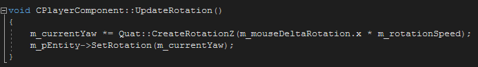
Completed CPlayerComponent UpdateRotationCreate a definition for
UpdateCamera();and fill it with the following:void CPlayerComponent::UpdateCamera() { m_currentPitch = crymath::clamp(m_currentPitch + m_mouseDeltaRotation.y * m_rotationSpeed, m_rotationLimitsMinPitch, m_rotationLimitsMaxPitch); Matrix34 finalCamMatrix; finalCamMatrix.SetTranslation(currentCameraOffset); finalCamMatrix.SetRotation33(Matrix33::CreateRotationX(m_currentPitch)); m_pCameraComponent->SetTransformMatrix(finalCamMatrix); }
Completed CPlayerComponent UpdateCamera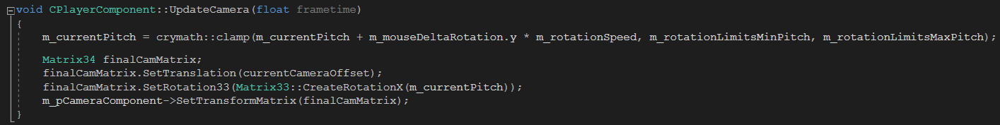
- The refined Player.cpp file should look like this:
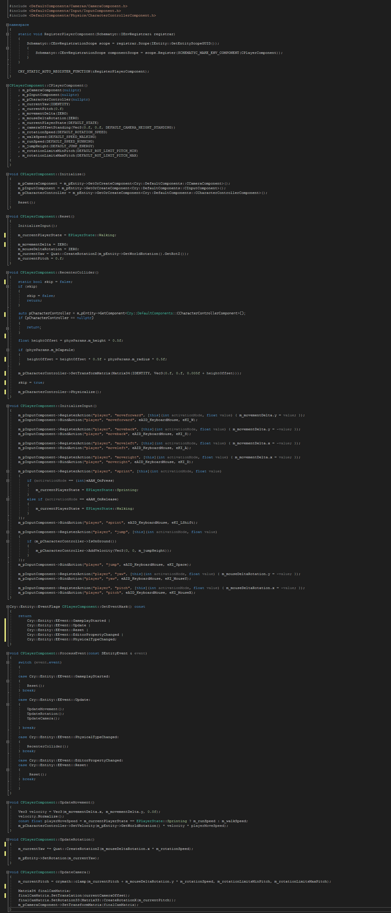
Refined Player.cpp
Adding Crouching
Updating Player.h
At the top of Player.h, add an
includethat will be used to determine if the character is currently under a physical object while crouching.namespace primitives { struct capsule; }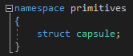
Namespace PrimitivesBelow the
enum class EPlayerState, add an enumerator and name itEPlayerStance:enum class EPlayerStanceUnderneath that, define and name the player stances:
{ Standing, Crouching };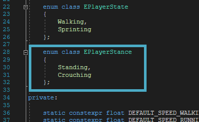
The finalized EPlayerStance classGo to the
privateclass within Player.h and add two new member variables under the//Runtime Variablessection:EPlayerStance m_currentStance; EPlayerStance m_desiredStance; Vec3 m_cameraEndOffset;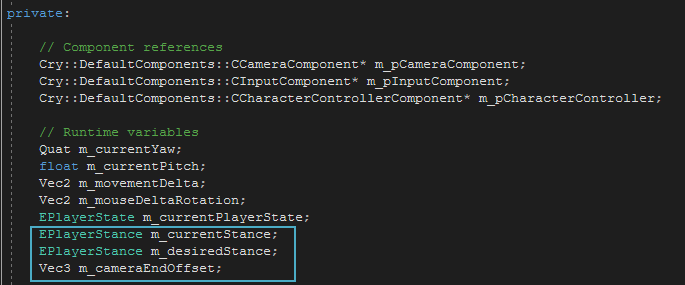
EPlayerStance Runtime VariablesAdd the following member variables under the
//Component Propertiessection:Vec3 m_cameraOffsetCrouching; float m_capsuleHeightStanding; float m_capsuleHeightCrouching; float m_capsuleGroundOffset;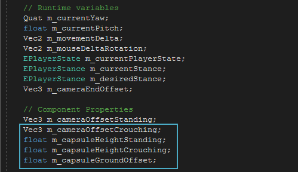
EPlayerStance Component PropertiesAdd the following to the
privateclass with the other staticconstexprvalues:static constexpr float DEFAULT_CAPSULE_HEIGHT_CROUCHING = 0.75; static constexpr float DEFAULT_CAPSULE_HEIGHT_STANDING = 1.6; static constexpr float DEFAULT_CAPSULE_GROUND_OFFSET = 0.2; static constexpr EPlayerStance DEFAULT_STANCE = EPlayerStance::Standing;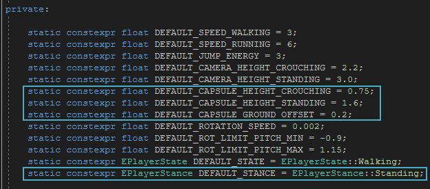
Static value declarationsIn the
publicclass, create newAddMemberlines for each of these new values:desc.AddMember(&CPlayerComponent::m_cameraOffsetCrouching, 'camc', "cameraoffsetcrouching", "Camera Crouching Offset", "Offset of the camera while crouching", Vec3(0.f, 0.f, DEFAULT_CAMERA_HEIGHT_CROUCHING)); desc.AddMember(&CPlayerComponent::m_cameraOffsetStanding, 'cams', "cameraoffsetstanding", "Camera Standing Offset", "Offset of the camera while standing", Vec3(0.f, 0.f, DEFAULT_CAMERA_HEIGHT_STANDING)); desc.AddMember(&CPlayerComponent::m_capsuleHeightCrouching, 'capc', "capsuleheightcrouching", "Capsule Crouching Height", "Height of collision capsule while crouching", DEFAULT_CAPSULE_HEIGHT_CROUCHING); desc.AddMember(&CPlayerComponent::m_capsuleHeightStanding, 'caps', "capsuleheightstanding", "Capsule Standing Height", "Height of collision capsule while standing", DEFAULT_CAPSULE_HEIGHT_STANDING); desc.AddMember(&CPlayerComponent::m_capsuleGroundOffset, 'capo', "capsulegroundoffset", "Capsule Ground Offset", "Offset of the capsule from the entity floor", DEFAULT_CAPSULE_GROUND_OFFSET);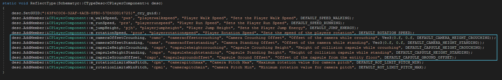
Crouching AddMember linesWithin the
protectedclass, add the following functions:void TryUpdateStance(); bool IsCapsuleIntersectingGeometry(const primitives::capsule& capsule) const;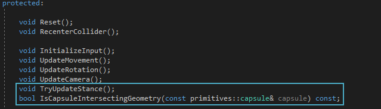
New FunctionsFinally, modify the existing
UpdateCamerafunction by addingfloat frametimebetween the brackets.void UpdateCamera(float frametime);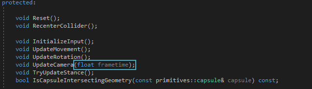
Updated void UpdateCamera
Updating Player.cpp
Within Player.cpp, add the following variables to the list of
CPlayerComponentvariables added during refinement:, m_currentStance(DEFAULT_STANCE) , m_desiredStance(DEFAULT_STANCE) , m_cameraEndOffset(Vec3(0.f, 0.f, DEFAULT_CAMERA_HEIGHT_STANDING)) , m_cameraOffsetStanding(Vec3(0.f, 0.f, DEFAULT_CAMERA_HEIGHT_STANDING)) , m_cameraOffsetCrouching(Vec3(0.f, 0.f, DEFAULT_CAMERA_HEIGHT_CROUCHING)) , m_capsuleHeightStanding(DEFAULT_CAPSULE_HEIGHT_STANDING) , m_capsuleHeightCrouching(DEFAULT_CAPSULE_HEIGHT_CROUCHING) , m_capsuleGroundOffset(DEFAULT_CAPSULE_GROUND_OFFSET)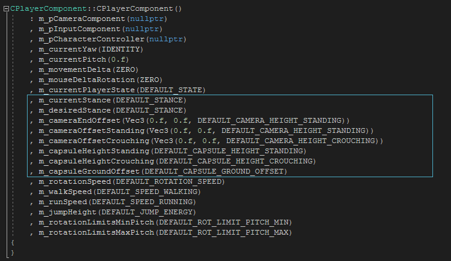
Crouching variablesAdd the following variables to the player state section of the
Resetfunction:m_currentStance = EPlayerStance::Standing; m_desiredStance = m_currentStance;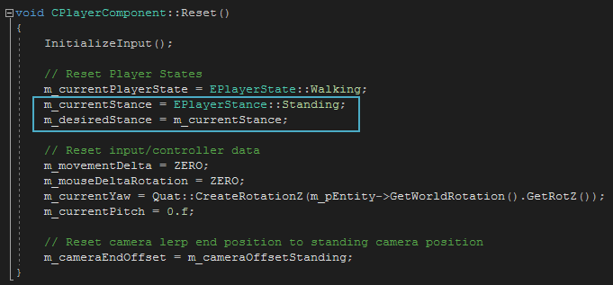
Player State Reset VariablesAdd the following to reset the camera position when a lerp is added later in this tutorial, and add a relevant description:
m_cameraEndOffset = m_cameraOffsetStanding;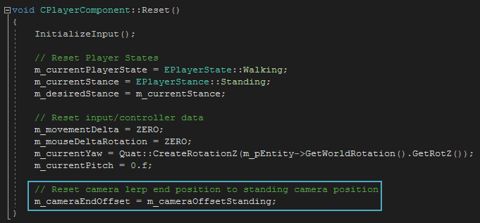
Lerp Reset
Adding an Input
Now you will need to define the main logic involved in having your player crouch, which will be controlled by the Left Ctrl key. This tutorial creates a crouch controlled by a hold-key, a key you press continually to activate the effect. Therefore, the code must check for both the key press, the key release, and if the character is already crouching.
Within
void CPlayerComponent::InitializeInput()in Player.cpp, copy and paste an existingRegisterActionandBindActionline and modify it so that you have a uniqueeKI(LCtrl) and name for the crouch action:m_pInputComponent->RegisterAction("player", "crouch", [this](int activationMode, float value){}); m_pInputComponent->BindAction("player", "crouch", eAID_KeyboardMouse, eKI_LCtrl);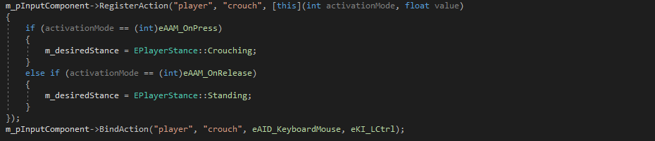
Crouching Bind and Register ActionsBetween the curly brackets of the
RegisterAction, start a new line to input your logic.m_pInputComponent->RegisterAction("player", "crouch", [this](int activationMode, float value) { });Add the following statement to set the crouch function:
if (activationMode == (int)eAAM_OnPress) { m_desiredStance = EPlayerStance::Crouching; }Beneath the
ifstatement, add the following else if statement to set the standing function.else if (activationMode == (int)eAAM_OnRelease) { m_desiredStance = EPlayerStance::Standing; }- The complete register/bind actions for the crouching should look like this:
Crouch Register and Bind actions
Adding a Lerp
If you used the crouching logic as is, you would have a functional but jarring crouching motion, as pressing crouch in a game with this logic would cause the camera to immediately jump between positions. You can smooth out the camera transition with a lerp.
Lerping (short for Linear Interpolation) is the mathematical interpolation, or smoothing, between two values.
At the top of the
case Cry::Entity::EEvent::Updatewithin Player.cpp, add the following calls:const float frametime = event.fParam[0]; TryUpdateStance();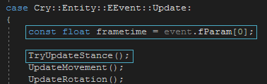
Crouching CallsStill within the
EEvent::Update, addframetimeto the brackets ofUpdateCamera:UpdateCamera(frametime);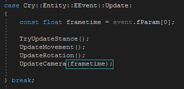
UpdateCamera frametimeAdd
float frametimeto the brackets of the initial call forCPlayerComponent::UpdateCamera:void CPlayerComponent::UpdateCamera(float frametime) { ...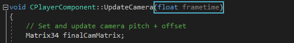
CPlayerComponent UpdateCameraWithin
CPlayerComponent::UpdateCamera, below the lines that modify the camera movement (added in a previous tutorial), add the following line to enable lerping:Vec3 currentCameraOffset = m_pCameraComponent->GetTransformMatrix().GetTranslation(); currentCameraOffset = Vec3::CreateLerp(currentCameraOffset, m_cameraEndOffset, 10.0f * frametime);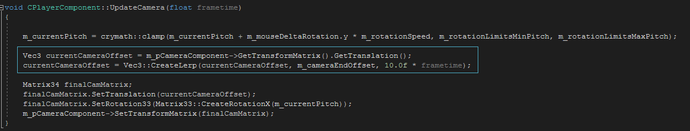
Adding the Lerp
Adding a TryUpdateStance
Now it is time to add the crouching logic itself, within the scope of the TryUpdateStance member variable.
As you did earlier in the tutorial, create a definition of
TryUpdateStanceright before the performance updates to Player.cpp.Add this definition right before the
UpdateCamera/UpdateRotation/UpdateMovementlines added in steps 16, 18, and 20 of "Refining Player.cpp", so that our updates happen only after we have actually pressed the crouch key.The problem with adding crouching logic after our update is that if we hit the crouch key, the key press is detected on the frame and therefore the movement logic would happen one frame later. We want crouching to happen during the same frame as the update, so we add
TryUpdateStancebefore the updates.Inside the curly brackets of the newly created
TryUpdateStancedefinition in Player.cpp, add:if (m_desiredStance == m_currentStance) return; IPhysicalEntity* pPhysEnt = m_pEntity->GetPhysicalEntity(); if (pPhysEnt == nullptr) return; const float radius = m_pCharacterController->GetPhysicsParameters().m_radius * 0.5f; float height = 0.f; Vec3 camOffset = ZERO;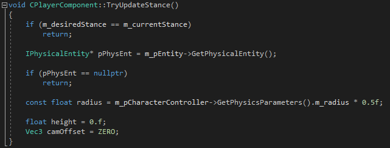
TryUpdateStance Setup
Below this add the basic crouch logic:
switch (m_desiredStance) { case EPlayerStance::Crouching: { height = m_capsuleHeightCrouching; camOffset = m_cameraOffsetCrouching; } break; case EPlayerStance::Standing: { height = m_capsuleHeightStanding; camOffset = m_cameraOffsetStanding; primitives::capsule capsule; capsule.axis.Set(0, 0, 1); capsule.center = m_pEntity->GetWorldPos() + Vec3(0, 0, m_capsuleGroundOffset + radius + height * 0.5f); capsule.r = radius; capsule.hh = height * 0.5f; if (IsCapsuleIntersectingGeometry(capsule)) { return; } }break; }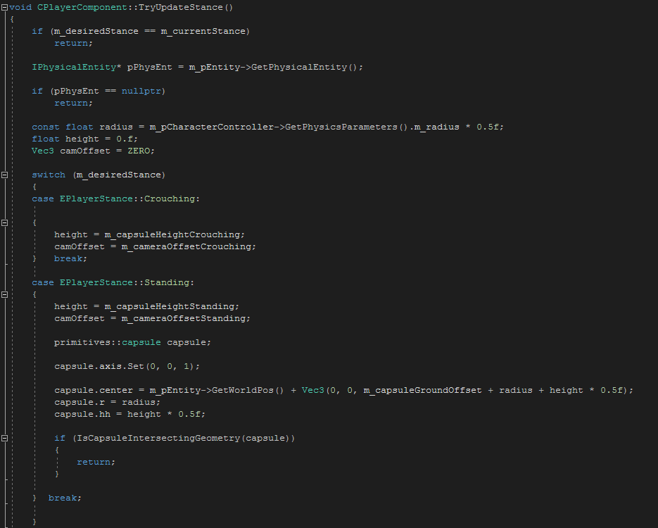
The crouch switch logicTo create the crouching motion, add the following to the end of
TryUpdateStance(still within the curly brackets):pe_player_dimensions playerDimensions; pPhysEnt->GetParams(&playerDimensions); playerDimensions.heightCollider = m_capsuleGroundOffset + radius + height * 0.5f; playerDimensions.sizeCollider = Vec3(radius, radius, height * 0.5f); m_cameraEndOffset = camOffset; m_currentStance = m_desiredStance; pPhysEnt->SetParams(&playerDimensions);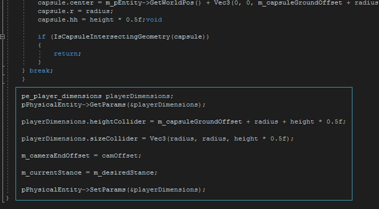
Continued TryUpdateStance code- The complete
TryUpdateStanceshould look like this: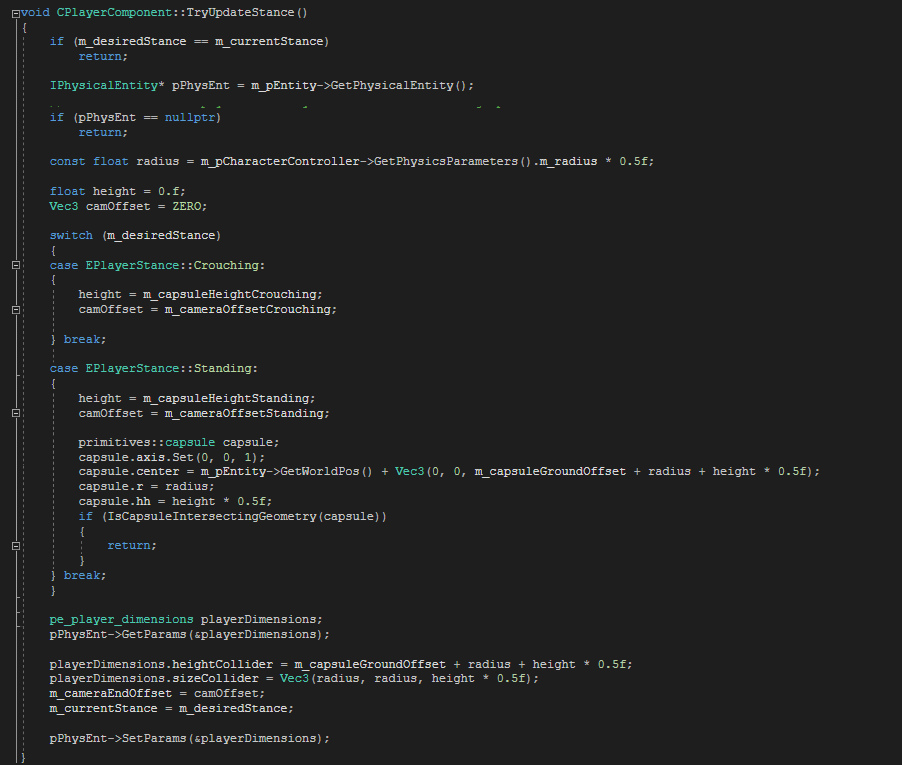
The completed TryUpdateStance
Creating the PWI
While crouching under a physical object, you need a way for the entity to check and see if that object would obstruct the character when they attempt to stand. To perform this check, you can use a primitive world intersection (PWI) test. This will create a primitive capsule projection based on the same dimensions as the standing CharacterController which will detect intersections and prevent the player from standing, even if LCtrl has been released.
- Create a definition for
bool CPlayerComponent, which you added to Player.h earlier in this tutorial. Add a line between the curly brackets of the new definition added to Player.cpp:
bool CPlayerComponent::IsCapsuleIntersectingGeometry(const primitives::capsule& capsule) const { }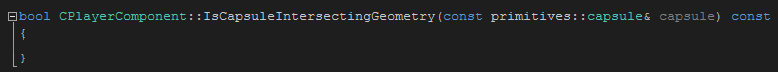
Empty IsCapsuleIntersectingGeometry functionIn the space between the brackets, add:
IPhysicalEntity* pPhysEnt = m_pEntity->GetPhysicalEntity(); if (pPhysEnt == nullptr) return false; IPhysicalWorld::SPWIParams pwiParams; pwiParams.itype = capsule.type; pwiParams.pprim = &capsule; pwiParams.pSkipEnts = &pPhysEnt; pwiParams.nSkipEnts = 1; intersection_params intersectionParams; intersectionParams.bSweepTest = false; pwiParams.pip = &intersectionParams; const int contactCount = static_cast<int>(gEnv->pPhysicalWorld- >PrimitiveWorldIntersection(pwiParams)); return contactCount > 0;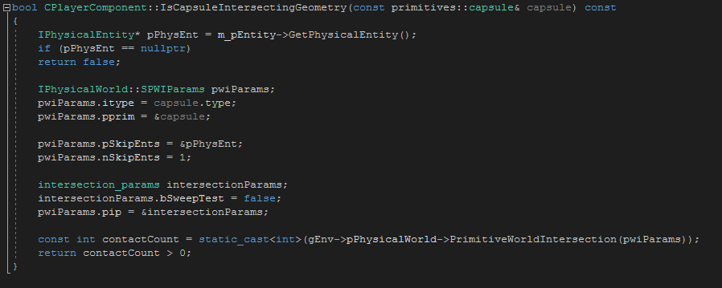
The Capsule Intersection test- To finish everything off, press Ctrl + Shift + S to save all tabs, and Ctrl + Shift + B to build the completed solution.
Testing the Character
Once the solution is built, you can test your player character in the Sandbox Editor.
- Open the level you created in the Creating a Player using C++ tutorial and select the previously placed Player Entity.
- With the Player Entity selected, open the Properties panel and scroll down to the CPlayerComponent properties, where your defaults should now be pre-set.
Play around with the values in the CPlayerComponent properties or redefine the default values in the code to find a camera and capsule height that best suits your game.
You may also want to add a static object, such as a static mesh or designer box, suspended in the air, to test the collision mechanism.
- Press Ctrl + G and test out your character.
Conclusion
This concludes Part 4 of the Creating a Player using C++ tutorial. To learn more about C++ in CRYENGINE and/or other topics, please refer to the CRYENGINE V Manual.
Video Tutorial
You can also follow this tutorial series in video form on our YouTube channel: